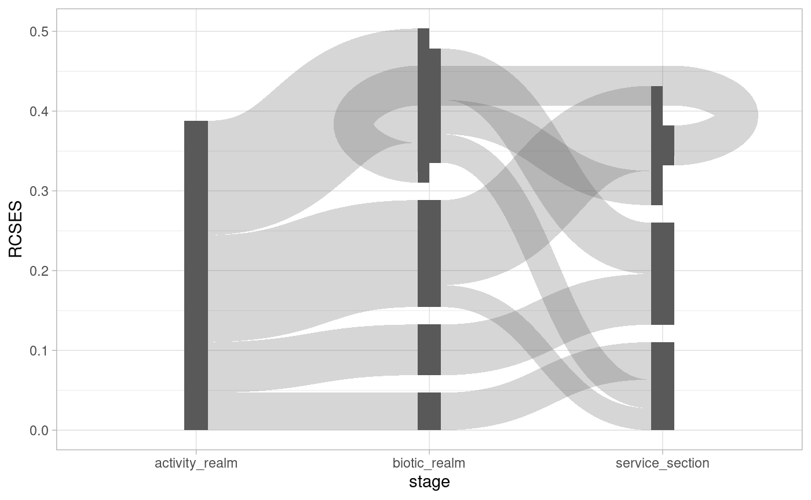
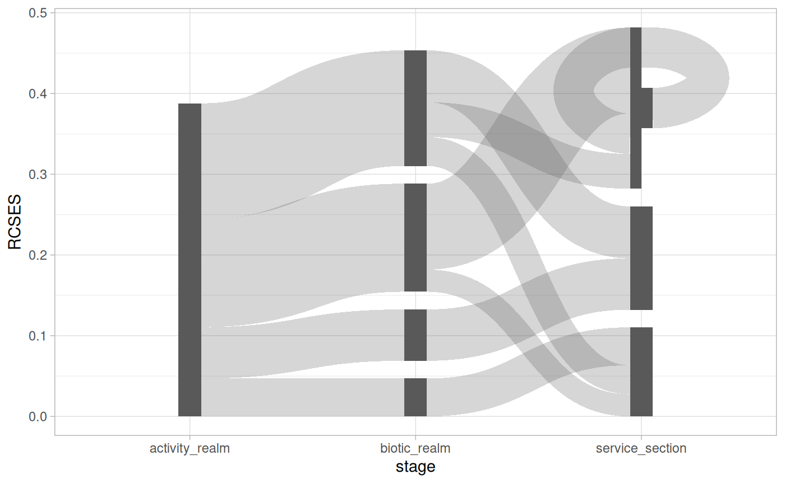

To cycle or not to cycle
The ggsankeyfier package requires you to specify from
which node, to which node an edge flows. See
vignette("data_management") for more technical details on
how this works. Consequently, this allows you to let edges flow to any
node in any stage. In most cases, Sankey or alluvial diagrams are
essentially stage-structured directed
acyclic graphs. However, the way that ggsankeyfier
organises data allows you to create stage-structured directed graphs.
In other words, you can create feedback loops in your diagram. This is
demonstrated in the present vignette.
For the examples we first need to prepare a basic plot:
library(ggsankeyfier)
library(ggplot2)
theme_set(theme_light())
set.seed(0)
pos <- position_sankey(v_space = "auto")
## Let's subset the data, to make the plot less cluttered:
es_subset <- pivot_stages_longer(
subset(ecosystem_services, RCSES > 0.02),
c("activity_realm", "biotic_realm", "service_section"),
"RCSES")
# And prepare a basis for the plot
p <-
ggplot(es_subset, aes(x = stage, y = RCSES, group = node,
connector = connector, edge_id = edge_id)) +
geom_sankeynode(position = pos) +
geom_sankeyedge(position = pos)Feedback
In order to demonstrate a feedback loop we rbind a
fictional edge to the demonstration data. Note that this feedback loop
does not make any sense in the context of the data. It only serves as
proof of principle. With the operator we update the plot with the data
that includes the feedback loop.
es_subset_feedback <-
es_subset |>
rbind(
data.frame(
RCSES = 0.05,
edge_id = max(es_subset$edge_id) + 1,
connector = c("from", "to"),
node = c("Cultural", "Fish & Cephalopods"),
stage = c("service_section", "biotic_realm")
)
)
p %+% es_subset_feedback
Self reference
Edges don’t even have to flow from one stage to another regardless of
its direction. Instead, it is also possible to let an edge flow from and
to the same stage. In fact, you can even let anedge flow from and to the
same node. This is illustrated in the example below, we we
rbind a fictional self-referencing node. Again, in the
context of the data, this self-reference does not make sense, but it
serves as proof of principle.
es_subset_selfref <-
es_subset |>
rbind(
data.frame(
RCSES = 0.05,
edge_id = max(es_subset$edge_id) + 1,
connector = c("from", "to"),
node = c("Cultural", "Cultural"),
stage = c("service_section", "service_section")
)
)
p %+% es_subset_selfref